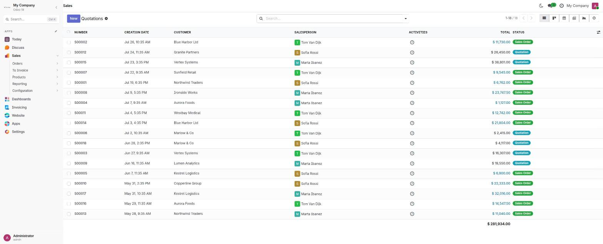
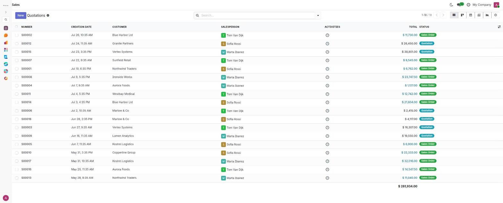
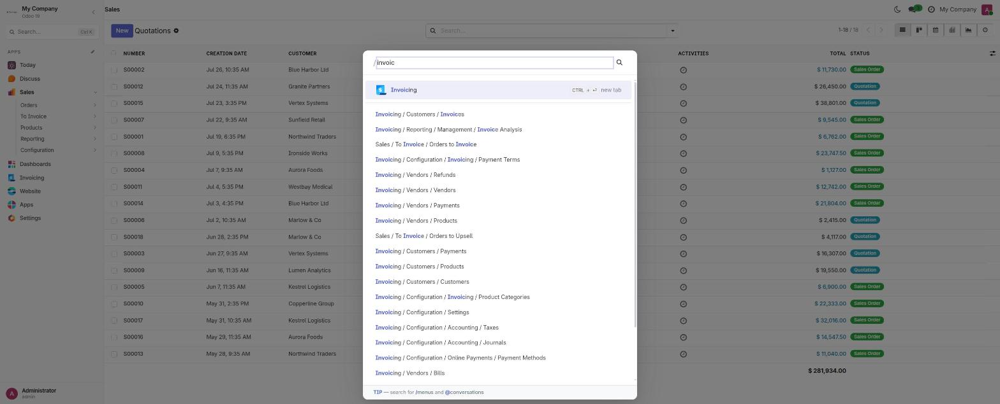
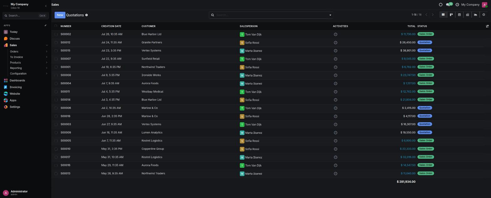
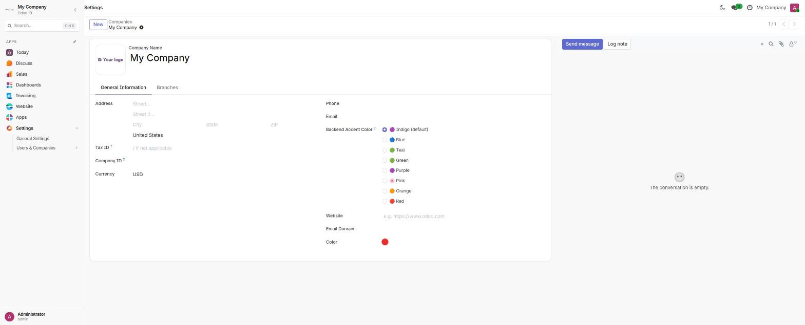
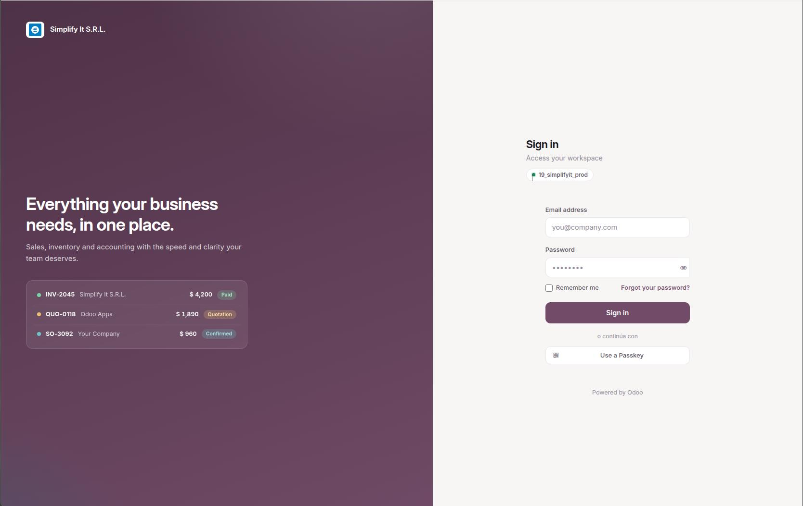

A full-height sidebar with your whole menu tree, Inter typography, a real dark mode and eight accent palettes — in one module that installs on both Community and Enterprise.

web. Install the same module on
Community or Enterprise — no separate edition to buy.
The sidebar carries your company brand, a Search trigger, every installed app, and the active app opened to its full menu tree. Collapse it to an icon rail with the header button or Ctrl + B — the choice is remembered per browser. On desktop the navbar hamburger and section dropdowns step aside, so there is exactly one way to navigate instead of three.

Ctrl + K opens Odoo's own command palette, restyled to match: hairline borders, soft shadow, Inter throughout. Same behavior your users already know, without the visual noise.

One click in the systray switches the whole backend to a full Linear dark palette — lists, forms, kanban, modals, chatter and the palette included. Odoo Community ships no dark mode at all; this module adds it. On Enterprise it integrates with the native color-scheme setting, so the choice survives a reload instead of snapping back to your system preference.

Pick the accent on the company form — Settings → Users & Companies → Companies — so each company in a multi-company database can have its own. Buttons, active menu entries, links and highlights follow it, and a matching variant is used in dark mode so contrast stays right in both.

The sign-in screen gets the same treatment, with your own claim, subclaim and footer text set from the general settings — no template override, no developer needed.

website to be installed.
But if you do have it, the Website app brings its own login layout and the
sign‑in screen may not look right. Email us at
support@simplifyit.com.bo
and we will send you the
simplifyit_linear_backend_theme_website add‑on, free of charge.
Everything else in the theme works exactly the same either way.
Most backend themes ship two separate products and charge for each. This one
declares a single dependency on web, adapts to whichever edition
it finds, and costs nothing on either.
| Community | Enterprise | |
|---|---|---|
| Linear sidebar | Replaces the apps dropdown | Coexists with the home menu |
| Home menu | Not applicable | Kept and restyled; sidebar hides while open |
| Dark mode | Added by this module | Integrates with the native setting |
| Mobile (<992px) | Stock Odoo navigation | Stock Odoo navigation |
web. If you happen to have
website installed, its own login layout takes over and the
sign-in screen may not look right — write to
support@simplifyit.com.bo
and we will send you the free
simplifyit_linear_backend_theme_website add-on.
Built by the same team, with the same care for detail.
This theme is free — what we do for a living is make Odoo fit the way your company actually works.
If you need support send an email to support@simplifyit.com.bo — we answer every message.